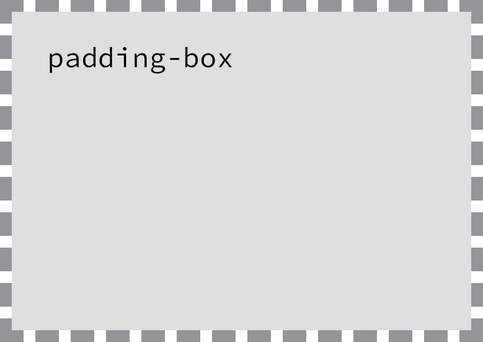

Setting Backgrounds & Gradients
Setting Backgrounds & Gradients
Backgrounds have a significant impact on the design of a website. They help create a site's look and feel, establish groupings, and assign priority, and they have a considerable influence on a website's usability.
Within CSS, element backgrounds can be a solid color, an image, a gradient, or a combination of these. As we decide how to implement these backgrounds, we should keep in mind that every background contributes to the overall appearance of our website.
In this lesson we're going to take a look at how to assign different types of backgrounds, including gradients, to elements; we'll also play around with a handful of CSS3 properties specific to backgrounds.
Adding a Background Color
The quickest way to add a background to an element is to add a
single-color background using the background or background-color
property. The background property accepts colors and images in
shorthand form, while the background-color property is used strictly
for setting solid background colors. Either property will work, and
which one you decide to use depends on your preference as well as the
case for which you're using it.
div { background-color: #b2b2b2; }
When adding a background color, we have a few options for the values we can use. As with other color values, we can pick from keywords, hexadecimal codes, and RGB, RGBa, HSL, and HSLa values. Most commonly we'll see hexadecimal values; however, we may occasionally want to use RGBa or HSLa values for transparencies.
Transparent Backgrounds
When using an RGBa or HSLa value as a transparent background color, it's a good idea to provide a fallback color, too, because not all browsers recognize RGBa or HSLa values. And when a browser comes across a value it doesn't recognize, it will ignore it.
Fortunately, there is an easy way to provide a fallback background. CSS
cascades from the top of a file to the bottom of a file; thus, we can
use two background-color properties within a single rule set. The
first background-color property will use a "safe" background color,
such as a hexadecimal value, and the second background-color property
will use an RGBa or HSLa value. Here, if a browser understands the RGBa
or HSLa value it will render it, and if it doesn't, it will fall back to
the hexadecimal value above it.
div { background-color: #b2b2b2; background-color: rgba(0, 0, 0, .3); }
Adding a Background Image
Besides adding a background color to an element, we can also add a
background image. Background images work similarly to background colors;
however, they offer a few additional properties to finesse the images.
As before, we can use the background property with a shorthand value,
or we can use the background-image property outright. No matter which
property we use, there must be an image source identified using a
url() function.
The url() function value will be the background image's path, and the
familiar rules for creating hyperlink paths apply here. Keep an eye out
for different directories, and be sure to show exactly where the image
resides. The path will be placed inside parentheses and quoted.
div { background-image: url("alert.png"); }
Adding a background image solely using a url value can provide
undesirable results, as by default the background image will repeat
horizontally and vertically from the top left of the given element to
fill up the element's background. Thankfully we can use the
background-repeat and background-position properties to control how
or even whether the image repeats.
Background Repeat
By default, a background image will repeat indefinitely, both vertically
and horizontally, unless otherwise specified. The background-repeat
property may be used to change the direction in which a background image
is repeated, if repeated at all.
div { background-image: url("alert.png"); background-repeat: no-repeat; }
The background-repeat property accepts four different values:
repeat, repeat-x, repeat-y, and no-repeat. The repeat value is
the default value and will repeat a background image both vertically and
horizontally.
The repeat-x value will repeat the background image horizontally,
while the repeat-y value will repeat the background image vertically.
Lastly, the no-repeat value will tell the browser to display the
background image once—that is, do not repeat it at all.
Background Position
By default, background images are positioned at the left top corner of
an element. However, by using the background-position property, we can
control exactly where the background image is placed relative to that
corner.
div { background-image: url("alert.png"); background-position: 20px 10px; background-repeat: no-repeat; }
The background-position property requires two values: a horizontal
offset (the first value) and a vertical offset (the second value). If
only one value is specified, that value is used for the horizontal
offset and the vertical offset will default to 50%.
Because we're moving the background image from the left top corner of the element, length values specifically will be in relation to that corner.
To set a background-position value, we can use the top, right,
bottom, left, and center keywords, pixels, percentages, or any
length measurement. Keywords and percentages work very similarly. The
keyword value left top is identical to the percentage value 0 0,
which will keep an image positioned at the left top corner of the
element. The keyword value right bottom is identical to the percentage
value 100% 100%, which will position an image in the right bottom
corner of the element.

Background images are positioned from the left top corner of an element
Using pixels for a background-position value is also common, as pixels
give us precise control over where our background will be positioned.
Shorthand Background Image Values
The background-color, background-image, background-position, and
background-repeat properties may be rolled up into a shorthand value
for the background property alone. The order of these properties as a
shorthand background property value may vary, however it commonly
falls as background-color, background-image, background-position,
and then background-repeat.
div { background: #b2b2b2 url("alert.png") 20px 10px no-repeat; }
Background Image Example
In the following example, we'll use the background property with a
shorthand value that includes background-color, background-image,
background-position, and background-repeat values.
Please take note that there is both a relative value and an absolute
value within the background-position value. The first value, 20
pixels, is the horizontal value, positioning the background-image 20
pixels from the left of the element. The second value, 50%, is the
vertical value, which vertically centers the background-image.
A few other properties and values are also included within the
notice-success class rule set to further style the alert message.
<div class="notice-success"> Woo hoo! Congratulations, you did it! </div>
.notice-success { background: #67b11c url("../../img/tick_2.png") 20px 50% no-repeat; background: #67b11c url("../../img/tick_1.svg") 20px 50% no-repeat; border: 2px solid #467813; border-radius: 5px; color: #fff; font-family: "Helvetica Neue", Helvetica, Arial, sans-serif; padding: 15px 20px 15px 50px; }
In Practice
Returning to our Styles Conference website, let's add some background colors. While we do that, we'll change a few other styles to keep all of our styles working together and to keep all of our content legible.
- We'll begin by taking a big step and applying a blue background to
the
<body>element alongside the existingcolorandfontproperties. All of the styles for the<body>element rule set now include the following:body { background: #293f50; color: #888; font: 300 16px/22px "Lato", "Open Sans", "Helvetica Neue", Helvetica, Arial, sans-serif; }
We've placed a blue
backgroundon the<body>element purposely, as our website will have a few different rows ofbackgroundcolors, and the most frequentbackgroundcolor will be blue. - Now that every page on our Styles Conference website includes a blue
background, let's clean up a few areas that will keep that blue background. Specifically, our<header>and<footer>elements will remain blue, as will the hero section on the home page.Within our
<header>and<footer>elements let's make all of our link colors start as white and then, when hovered over, turn the same green as our headings.We'll begin with our
<header>element. In order to select all<a>elements within the<header>element, we'll add a class ofprimary-headerto the<header>element (in addition to the existingcontainerandgroupclasses). Don't forget, we'll need to add this class to the<header>elements across all of our pages.<header class="primary-header container group"> ... </header>
With the
primary-headerclass in place on the<header>element, and the existingprimary-footerclass in place on the<footer>element, we can add two new rule sets to the bottom of the links section within ourmain.cssfile.The first rule set will select all
<a>elements within an element with the class attribute value ofprimary-headerorprimary-footerand set theircolorto white, as defined by comma separating two individual selectors that share the same property and value. The second rule set will select the same<a>elements as before but will change theircolorto green when a user hovers over them..primary-header a, .primary-footer a { color: #fff; } .primary-header a:hover, .primary-footer a:hover { color: #648880; }
- While we're making some of our text white, let's make the text within
the hero section of our home page white also, as it will remain on a
blue
background. We have the existingheroclass rule set available to add styles to, so let's add our white textcolorthere. In all, ourheroclass rule set should include the following:.hero { color: #fff; line-height: 44px; padding: 22px 80px 66px 80px; text-align: center; }
- Also within the hero section of our home page, let's clean up some of
the button styles. We'll begin by adding some new properties to our
btnclass rule set, within the buttons section of ourmain.cssfile.Specifically, let's set the button text
colorto white, make sure ourcursoris always apointer, increase thefont-weight, add a small amount ofletter-spacing, and change ourtext-transformtouppercase.In all, our new
btnclass rule set should look like this:.btn { border-radius: 5px; color: #fff; cursor: pointer; display: inline-block; font-weight: 400; letter-spacing: .5px; margin: 0; text-transform: uppercase; }
We'll also clean up some of the alternate button styles by way of the
btn-altclass rule set. Specifically, let's make the buttons' borders white and add hover styles including a whitebackgroundand blue textcolor.With all of the additions, our new
btn-altclass rule set should look like this:.btn-alt { border: 1px solid #fff; padding: 10px 30px; } .btn-alt:hover { background: #fff; color: #648880; }
- Now that we have all of the areas with blue backgrounds cleaned up,
let's add styles for the rows that have white backgrounds. Let's
create a new section within our
main.cssfile for rows, just below the clearfix section. Within this new rows section, let's create a new class selector namedrow.Within our new
rowclass rule set, let's add a whitebackground, a minimumwidthof960pixels (to make sure ourrowelements are always larger than thewidthof ourcontainerorgridelements), and some verticalpadding. Altogether our new row section within ourmain.cssfile should look like this:/* ======================================== Rows ======================================== */ .row { background: #fff; min-width: 960px; padding: 66px 0 44px 0; }
- With our
rowclass styles in place, let's add a row with a whitebackgroundto our home page. We'll do this on our teasers section. Currently this area has a<section>element with the class of grid wrapping three additional<section>elements with the classes of teaser andcol-1-3.To add a white
backgroundto this section, we're going to wrap all of these elements in an element with the class ofrow.Because we'll want the entire teasers section wrapped in a
<section>element, we're going to add a new<section>element with the class ofrowthat surrounds the existing<section>element with the class ofgrid.Having two
<section>elements wrapping the exact same content diminishes semantic value. To correct this we'll change the second<section>element, the one with the class ofgrid, to a<div>element. After all, at this point this element is only adding styles, not semantic meaning, and is appropriate as a<div>element.The structure of our new teasers element should look like this:
<section class="row"> <div class="grid"> <!-- Speakers --> <section class="teaser col-1-3"> ... </section><!-- Schedule --><section class="teaser col-1-3"> ... </section><!-- Venue --><section class="teaser col-1-3"> ... </section> </div> </section>
It is amazing how a few background colors can affect the design of a website. Our Styles Conference website is coming along quite nicely, and our home page is proof.
Our Styles Conference website home page after adding some background colors
Designing Gradient Backgrounds
Gradient backgrounds were introduced with CSS3, and designers and front-end developers everywhere rejoiced. Although gradient backgrounds do not work in legacy browsers, they are supported by all modern browsers.
Within CSS, gradient backgrounds are treated as background images. We
can create a gradient using the background or background-image
properties, just like a regular background image. The property value for
a gradient background varies depending on what type of gradient we'd
like, linear or radial.
Gradient Background Vendor Prefixes
Previously, we discussed adding vendor prefixes to new CSS properties or values so that browsers can support recently developed CSS features. Gradient background values were one of the values that required the use of vendor prefixes. Fortunately, most browsers have since eliminated the need for a vendor prefix in order to render a gradient background; however, it is still worth outlining vendor prefixes to ensure the best support.
At first, as we begin discussing linear gradient backgrounds, we'll include each of the different vendor prefixes. After that, in the interest of brevity, we'll omit the different prefixes as we continue to discuss gradient backgrounds, including radial gradient backgrounds.
Linear Gradient Background
For years designers and developers have been cutting up gradient image files, created using image-processing software, and using them as linear gradient backgrounds on elements. The process worked, but it took a while to implement and was very inflexible. Fortunately those days are gone, and linear gradient backgrounds can now be specified within CSS. If a color needs changing, there is no need to reproduce and recut an image and upload it to the server. Now all we need to do is change a quick value within CSS. Beautiful.
div { background: #466368; background: -webkit-linear-gradient(#648880, #293f50); background: -moz-linear-gradient(#648880, #293f50); background: linear-gradient(#648880, #293f50); }
<div></div>
div { background: #466368; background: linear-gradient(#648880, #293f50); border-radius: 6px; height: 120px; }
Linear gradients are identified by using the linear-gradient()
function within the background or background-image property. The
linear-gradient() function must include two color values, the first of
which will be the beginning color value and the second of which will be
the ending color value. The browser will then handle the transition
between the two colors.
Before any gradient backgrounds are identified, we'll also put in a
default background property with a solid color. The solid color is to
be used as a fallback should a browser not support gradient backgrounds.
Changing the Direction of a Gradient Background
By default, linear gradient backgrounds move from the top to the bottom of an element, transitioning smoothly between the first color value and the second. This direction, however, may be changed with the use of keywords or a degree value stated before any color values.
For example, should we want a gradient to move from the left of an
element to the right, we can use the keyword value to right to
identify the direction in which the linear gradient should progress.
Keyword values may also be combined. If we want the gradient to move
from the left top to the right bottom of an element, we can use the
keyword value of to right bottom.
div { background: #466368; background: linear-gradient(to right bottom, #648880, #293f50); }
<div></div>
div { background: #466368; background: linear-gradient(to right bottom, #648880, #293f50); border-radius: 6px; height: 120px; }
When we use a diagonal gradient on an element that isn't exactly square, the background gradient will not proceed directly from one corner to the other. Instead, the gradient will identify the absolute center of the element, place anchors in the perpendicular corners from where it should progress, and then move to the general direction of the corner stated within the value. These corners the gradient moves towards are called "magic corners," as they are not absolute. Eric Meyer has done a wonderful job of outlining this syntax in his article “Linear Gradient Keywords”.
Besides keywords, degree values are also acceptable. If we want our
gradient to move to the left top of an element, we can use the degree
value of 315deg, or if we want our gradient to move to the right
bottom of an element, we can use the degree value of 135deg. This same
concept can be applied for any degree value, 0 through 360.
Radial Gradient Background
While the linear gradient is perfect for a gradient moving from one
direction to another, often the need for a radial gradient arises.
Radial background gradients work just like linear gradients and share
many of the same values. For radial gradients, instead of using the
linear-gradient() function within the background or
background-image property, we'll use the radial-gradient() function.
div { background: #466368; background: radial-gradient(#648880, #293f50); }
<div></div>
div { background: #466368; background: radial-gradient(#648880, #293f50); border-radius: 6px; height: 120px; }
Radial gradients work from the inside to the outside of an element.
Thus, the first color identified within the radial-gradient() function
will sit in the absolute center of the element, and the second color
will sit on the outside of an element. The browser will then create the
transition between the two colors.
One of the primary differences between radial gradients and linear gradients is that radial gradients can be quite complex, with values for location, size, radius, and so forth. We'll cover the basics, but please feel free to delve further into radial gradients, as they provide much more power than is outlined here.
CSS3 Gradient Background Generator
Working with CSS3 gradients by hand can be quite difficult at times, especially if you are new to them. Fortunately, a few CSS3 gradient generators have popped up. Each generator works a little differently, and some provide more options than others. If you're interested, I recommend doing some research to find the right generator for your needs.
Gradient Color Stops
At a minimum, gradient backgrounds will transition from one color to another; however, we may add multiple colors to a gradient and have the browser transition between all of them. To do this we'll add color stops to the given gradient function, with commas separating each color stop from the next.
div { background: #648880; background: linear-gradient(to right, #f6f1d3, #648880, #293f50); }
<div></div>
div { background: #466368; background: linear-gradient(to right, #f6f1d3, #648880, #293f50); border-radius: 6px; height: 120px; }
By default, the browser will position every color stop an equal distance from the next and will transition between them accordingly. If more control over how colors are positioned is desired, a location along the gradient may be identified for each color stop. The location should be declared as a length value and should fall after the color value.
div { background: #648880; background: linear-gradient(to right, #f6f1d3, #648880 85%, #293f50); }
div { background: #466368; background: linear-gradient(to right, #f6f1d3, #648880 85%, #293f50); border-radius: 6px; height: 120px; }
Unless specified otherwise, the first color stop will be positioned at
0%, and the last color stop will be positioned at 100%.
Gradient Background Example
Using the same success alert message from before, we'll swap out the old background image for a linear gradient background image.
For this we'll include two background properties. The first
background property specifies a solid color hexadecimal value, which
serves as a fallback should a browser not support linear gradient
backgrounds. The second background property includes the
linear-gradient() function, which identifies a green gradient
background that transitions from the top of the element to the bottom of
the element.
<div class="notice-success"> Woo hoo! Congratulations, you did it! </div>
.notice-success { background: #67b11c; background: linear-gradient(#72c41f, #5c9e19); border: 2px solid #467813; border-radius: 5px; color: #fff; font-family: "Helvetica Neue", Helvetica, Arial, sans-serif; padding: 15px 20px; }
In Practice
With gradient backgrounds now in the mix, let's create a new row for our Styles Conference website, this time using a gradient.
- We'll create a new row with a gradient background by using the class
of
row-alt. Because the new row will share the samemin-widthproperty and value as therowclass selector, we'll combine these two selectors..row, .row-alt { min-width: 960px; }
Next we'll want to create new rule sets to apply styles specifically to the
row-altclass selector. These new styles will include a gradient background that starts with green and transitions to yellow, from left to right.Using the
linear-gradient()function with the appropriate values and vendor prefixes, we'll add the gradientbackgroundto therow-altclass rule set. We'll also include a singlebackgroundcolor before the gradientbackgroundas a fallback, just in case a browser doesn't support gradient backgrounds.Lastly, we'll also add in some vertical
padding. Our updated row section now looks like this:.row, .row-alt{ min-width: 960px; } .row { background: #fff; padding: 66px 0 44px 0; } .row-alt { background: #cbe2c1; background: -webkit-linear-gradient(to right, #a1d3b0, #f6f1d3); background: -moz-linear-gradient(to right, #a1d3b0, #f6f1d3); background: linear-gradient(to right, #a1d3b0, #f6f1d3); padding: 44px 0 22px 0; }
- With our
row-altstyles in place, let's put them to use on all of our interior pages. Currently, all of our interior pages have a<section>element with a class ofcontainer. Then, inside each<section>element is an<h1>element containing the heading of the page.We're going to alter these
<section>elements much like we did the teaser<section>element on our home page. We'll wrap each<section>element with a class ofcontainerin a<section>element with the class ofrow-alt. We'll then change each<section>element with a class ofcontainerto a<div>element for better semantic alignment.Each of our interior pages should now include the following:
<section class="row-alt"> <div class="container"> <h1>...</h1> </div> </section>
- Because we are updating our interior pages, let's make their
introductions, or leads, a little more appealing. We'll begin by
adding a paragraph introducing each page just below the
<h1>element in each<section>element with a class ofrow-alt. Ourspeakers.htmlpage, for example, may now include the following lead section:<section class="row-alt"> <div class="container"> <h1>Speakers</h1> <p>We’re happy to welcome over twenty speakers to present on the industry’s latest technologies. Prepare for an inspiration extravaganza.</p> </div> </section>
- In addition to inserting the paragraph, let's also change some of the
styles within the lead section. To do this, we'll add a class of
leadto the<div>element that already has a class ofcontainer; this can be found nested directly inside the<section>element with a class ofrow-alt. Our lead section for each interior page will now look like this:<section class="row-alt"> <div class="lead container"> ... </div> </section>
- Once the
leadclass is in place, we'll center all of the text within these<div>elements. We'll also increase thefont-sizeandline-heightof any paragraphs within these<div>elements.We'll create a new section for leads within our
main.cssfile, just below the typography section, and add the following styles:/* ======================================== Leads ======================================== */ .lead { text-align: center; } .lead p { font-size: 21px; line-height: 33px; }
The interior pages of our Styles Conference website have now received some long-overdue love in the form of gradient background rows and leads. Make sure to review the code for all of the interior pages to see their newly enhanced content, headings, and paragraphs.
The Speakers page of our Styles Conference website, complete with a gradient background row
Using Multiple Background Images
For the longest time, elements were allowed to have only one background
image at a time, which created quite a few constraints when designing a
page. Fortunately, with CSS3, we can now use more than one background
image on an element by comma-separating multiple background values
within a background or background-image property.
The background image value that comes first will be the foremost
background image, and the background image that's listed last will be
the rearmost background image. Any value between the first and the last
will reside within the middle ground accordingly. Here's an example of
the CSS for a <div> element that uses three background images:
div { background: url("foreground.png") 0 0 no-repeat, url("middle-ground.png") 0 0 no-repeat, url("background.png") 0 0 no-repeat; }
The preceding code uses a shorthand value for the background property,
chaining multiple background image values together. These shorthand
values may also be broken up into comma-separated values across the
background-image, background-position, and background-repeat
properties.
Multiple Background Images Example
Let's go back to the success alert message once more to combine both the tick background image and the linear gradient background image.
In order to do so, we'll include two values within the second background property. The first value, the foremost image, will be the tick image. The second value, the rearmost image, will be the linear gradient. The two values are comma separated. |
<div class="notice-success"> Woo hoo! Congratulations, you did it! </div>
.notice-success { background: #67b11c; background: url("../../img/tick_2.png") 20px 50% no-repeat, linear-gradient(#72c41f, #5c9e19); background: url("../../img/tick_1.svg") 20px 50% no-repeat, linear-gradient(#72c41f, #5c9e19); border: 2px solid #467813; border-radius: 5px; color: #fff; font-family: "Helvetica Neue", Helvetica, Arial, sans-serif; padding: 15px 20px 15px 50px; }
Exploring New Background Properties
Along with gradient backgrounds and multiple background images, CSS3
also introduced three new CSS
properties: background-size, background-clip, and
background-origin.
The background-size property allows us to change the size of a
background image, while the background-clip and background-origin
properties allow us to control where a background image is cropped and
where a background image is contained within the element (inside the
border or inside the padding, for example).
CSS3 Background Size
The background-size property allows us to specify a size for a
background image. The property accepts a few different values, including
length and keyword values.
When using length values, we can specify a width and a height value by using two space-separated values. The first value will set the width of the background image, while the second value will set the height of the background image. It's important to note that percentage values are in relation to the element's size, not the background image's original size.
Consequently, setting a background-size property with a 100% width
will make the background image occupy the full width of the element. If
a second value isn't identified after the width, the height value will
be automatically set to preserve the aspect ratio of the background
image.
The keyword value auto may be used as either the width or height value
to preserve the aspect ratio of the background image. For example, if we
want to set the height of the background image to be 75% of the height
of the element while maintaining the image's aspect ratio, we can use a
background-size property value of auto 75%.
<div></div>
div { background: url("https://placeholdit.imgix.net/~text?txtsize=100&bg=000099&txtclr=ffffff&txt=Hello&w=600&h=600") 0 0 no-repeat; background-size: auto 75%; border: 2px dashed #9799a7; height: 240px; width: 200px; }
Cover & Contain Keyword Values
In addition to length background-size property values, there are also
cover and contain keyword values available to the background-size
property.
The cover keyword value specifies that the background image will be
resized to completely cover an element's width and height. The
background image's original aspect ratio will be preserved, yet the
image will stretch or shrink as necessary to cover the entire element.
Often when using the cover keyword value, part of the background image
is cut off in order for the image to occupy the full available space of
the element.
The contain keyword value, on the other hand, specifies that the
background image will be resized to reside entirely contained within an
element's width and height. In doing so the background image's original
aspect ratio will be preserved, but the image will stretch or shrink as
necessary to remain within the width and height of the element. In
contrast with the cover keyword value, the contain keyword value
will always show the full background image; however, oftentimes it will
not occupy the full available space of the element.
Both the cover and contain keyword values may result in slightly
distorted background images, particularly when the images are stretched
beyond their original dimensions. We'll want to keep an eye out for this
when using these values, to make sure the resulting styles are
satisfactory.
CSS3 Background Clip & Background Origin
The background-clip property specifies the surface area a background
image will cover, and the background-origin property specifies where
the background-position should originate. The introduction of these
two new properties corresponds with the introduction of three new
keyword values: border-box, padding-box, and content-box. Each of
these three values may be used for the background-clip and
background-origin properties.
div { background: url("shay.jpg") 0 0 no-repeat; background-clip: padding-box; background-origin: border-box; }
The background-clip property value is set to border-box by default,
allowing a background image to extend into the same area as any border.
Meanwhile, the background-origin property value is set to
padding-box by default, allowing the beginning of a background image
to extend into the padding of an element.

border-box value extends the background into the border of an element
padding-box value extends the background into the padding of a element, but the background is contained within any border
content-box value contains the background within the border and padding of an element
We first discussed these keyword values when we covered the box-sizing
property. The values themselves haven't changed in meaning, but
their functions do change with the use of the different background
properties.
Summary
Adding backgrounds and gradients to our pages allows us to bring color to the forefront of our designs. These features also help to define how content is grouped and to improve the layout of our pages as a whole.
To review, this lesson covered the following:
- How to add background colors and images to elements
- CSS gradients, both linear and radial, and how to customize them
- How to apply multiple background images to a single element
- New CSS3 properties that allow us to change the size, surface area, and origin of background images
Adding background colors, gradients, and images brings forth quite a few possibilities to enhance the overall design of our websites. Soon we'll discuss how to semantically add images (aside from background images) and other media to our pages. But before that, let's take a look at how to semantically create lists.